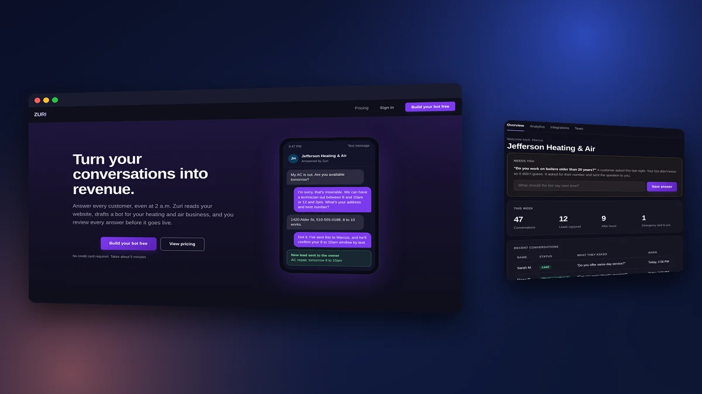
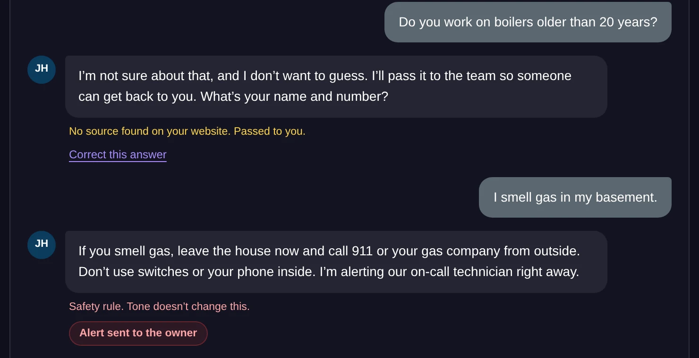
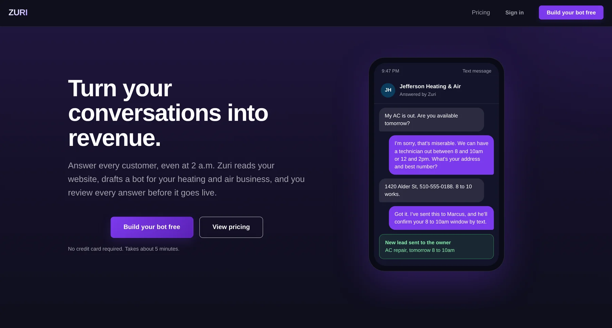
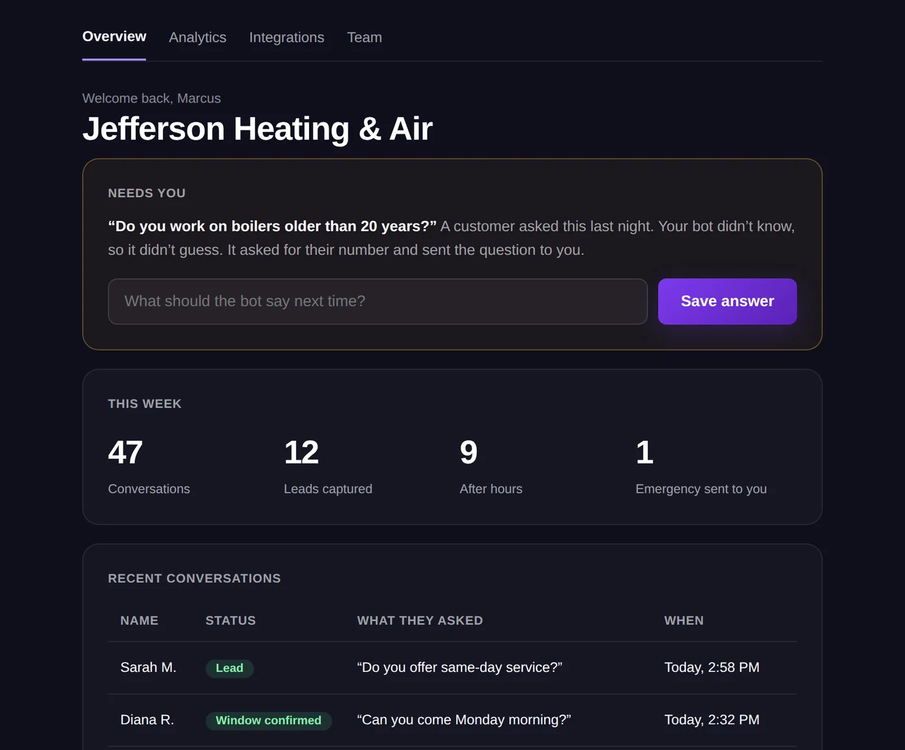

Zuri AI
A working prototype in a week, ten conversations, and the call to stop on evidence.
See the prototype ↗
- The idea
- A bot that reads your website, learns your brand, and answers your customers for you.
- I owned
- The product, the design, the prototype and the pitch deck.
- What I did
- Built a working prototype in about a week, and talked to 10 people.
- What happened
- Six polite maybes, four no's, none paying. Coaches wanted our marketing tool more, so Zuri is on ice while I test a new direction.
- What it covers
- Zero-to-one product design, fast research, and a hard decision made on evidence.
Three Screens, Three Decisions.



A Support Bot Nobody Needed Yet
Where We Started
Zuri.chat began as a URL-first, no-code AI chatbot platform for small business support, aimed first at Singapore and Southeast Asia. The pitch: paste your URL and see a custom, brand-aligned support agent live in 30 seconds. It read your site, picked up your brand colors and tone, and trained itself on your content.
Where Zuri Came From
Zuri grew out of Adwiser, a marketing tool I was building for coaches. Coaches were the people around me: friends from Facebook and from events who moved into coaching around the end of COVID. I also talked to cafe owners and other small business owners. I noticed two groups. Some coaches had 20+ years of experience and no online presence, and they didn't know where to start. Newer coaches with strong marketing were the ones getting the customers.
Why It Had to Change
The feedback coming out of Antler was direct: a crowded market, no defensible moat, and weak audience economics. The coaches and small businesses we were targeting did not have the budget or the lead volume to justify a bot.
Owners Want Leads, Not a Bot.
The pivot was a product decision, a positioning decision and a design decision at the same time. They want leads and revenue, so I positioned Zuri around that: turn conversations into revenue.
If the product is the outcome, the demo has to prove it. So instead of asking people to configure a bot, the journey became: show me my bot working with my business.
From Pivot to Working Demo

Fast, With Real People.
Speed
I built the first prototype and the pitch deck during Antler, and ran the interviews, in about a week. I was obsessive about speed.
The Research
I talked to 10 people: coaches in Singapore, Indonesia, Germany and Seattle, plus some cafe owners. Some had signed up as customers and some hadn't, which made the feedback more honest. People liked that it picked up their brand and that it was quick to set up. But it mattered less to them than Adwiser.
The Co-Founders
Two of us: me on product and design, and my co-founder on engineering. He loved Zuri. I loved Adwiser. We even thought about white-labeling Zuri and selling it to other developers. We got ahead of ourselves.
Five Moves That Mattered
1. The URL Is the First Step
Most tools bury the URL in settings. I made it the entry point, so the system detects the brand and learns from the site immediately and the user sees it working before they decide anything.
2. Personality, Shown Not Configured
Instead of technical settings, four personalities (professional, helpful, direct, warm), each with a live example line. People understand the difference by reading it.
3. Honest Status Messages
The completion screen first said "Your bot is live!" even though deployment was still pending. I changed it to "Your bot is configured" and removed copy that overpromised. Trust starts in the small words.
4. Deployment as a Milestone
Website or WhatsApp, as two clear cards, with Slack, Zendesk and custom routed to a conversation. Deployment became a step in the journey, not a settings page.
5. Pricing as the Next Step, Not a Wall
"Your bot is ready. One more step." Standard was recommended, "cancel anytime" was stated plainly, and the plan cards showed what you were choosing.
What It Added Up To
Ten conversations, six polite maybes, four no's, none paying. The six maybes were mostly being nice to me, because none of them converted. That told me what I needed to know: coaches wanted Adwiser, and Zuri only made sense after Adwiser brought them leads. My idea was one combined product: Adwiser finds the leads, and Zuri catches them.
This was our way to graduate from Antler and get an investment. It wasn't worth going for.
Learning no was a win. A week for a prototype and a deck is a small investment, and it saved us thousands of hours building something the coaches didn't want.
The new direction is businesses that already do their own marketing and already have leads, and are afraid of losing them. I built the prototype for home service shops, like HVAC. Whether that is true is still untested, so Zuri is on ice until I can test it.
I'd pick Zuri back up once I've tested the new direction with businesses that already have leads.
Split the Research.
I'd find three or four different groups and split the calls: you call 10 from this group, I call 10 from that one. And I'd research each group online first.
I loved Adwiser, my co-founder loved Zuri, and my customers, who I had hand-picked, liked Adwiser. I wasn't as hungry for Zuri. If I had been, I'd have gone and talked to cafes. It looks nice and it sounds cool, and it's a product person's dream, but it wasn't connecting with people.
Getting customers when nobody knows your name is the part I'm still learning. At Facebook, everyone already knew the company.
Build a Bot Yourself.
Build a bot in seven steps, test it live, choose a plan and see the dashboard. The whole flow runs in the prototype.
Open the prototype ↗If We Talk, Start Here.
- The hardest decision I made: stopping Zuri on evidence.
- What ten conversations taught me.
- How I built a prototype and a deck in a week.
- Why the completion screen says "configured," not "live."
Let's talk.
I'm open to product design leadership roles. If this is the kind of thinking you need, I'd like to hear about it. Hiring? Put the role in the subject line. Selling a service? I'm not buying.
Email about a roleMore work